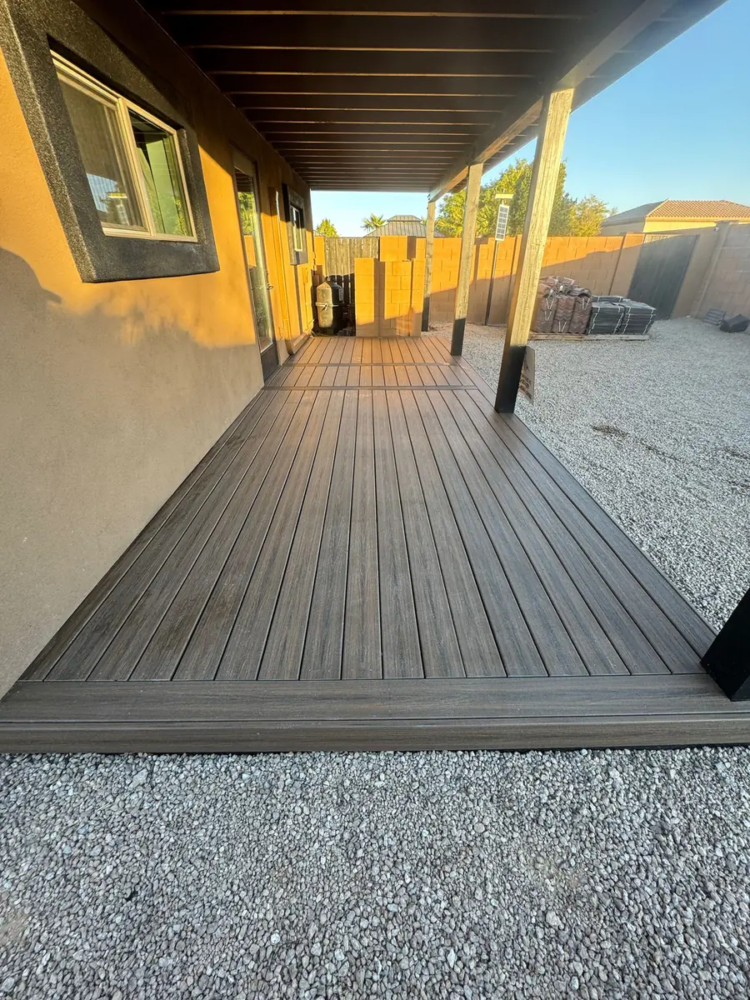
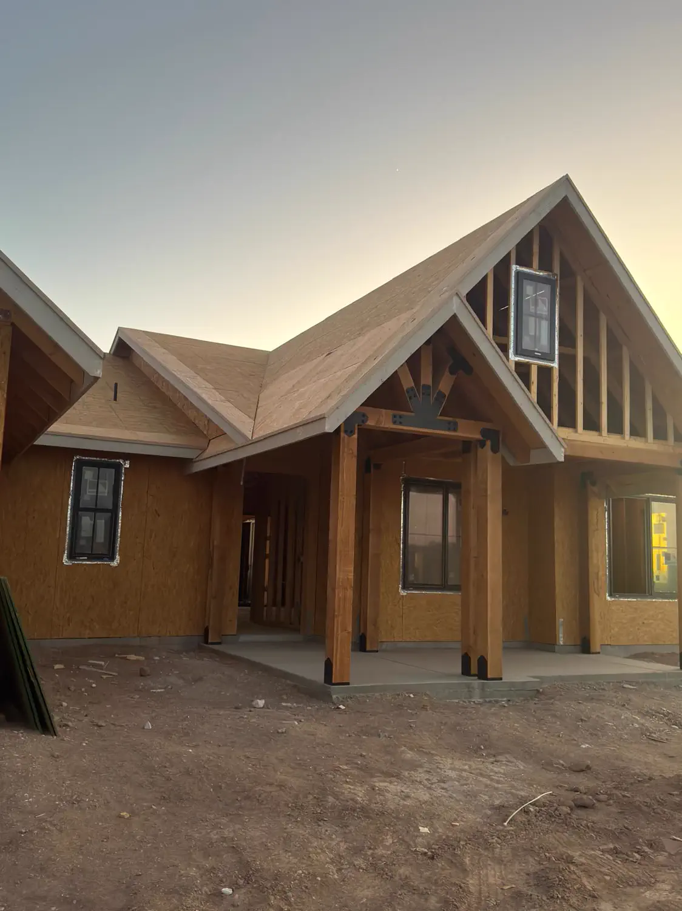
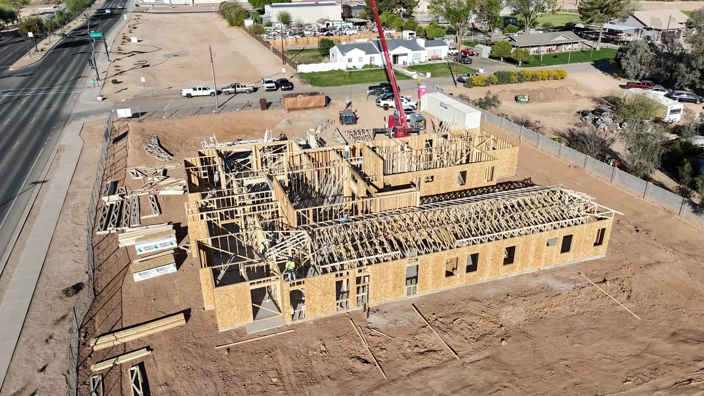
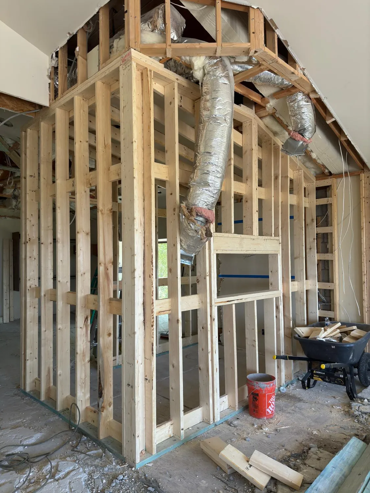
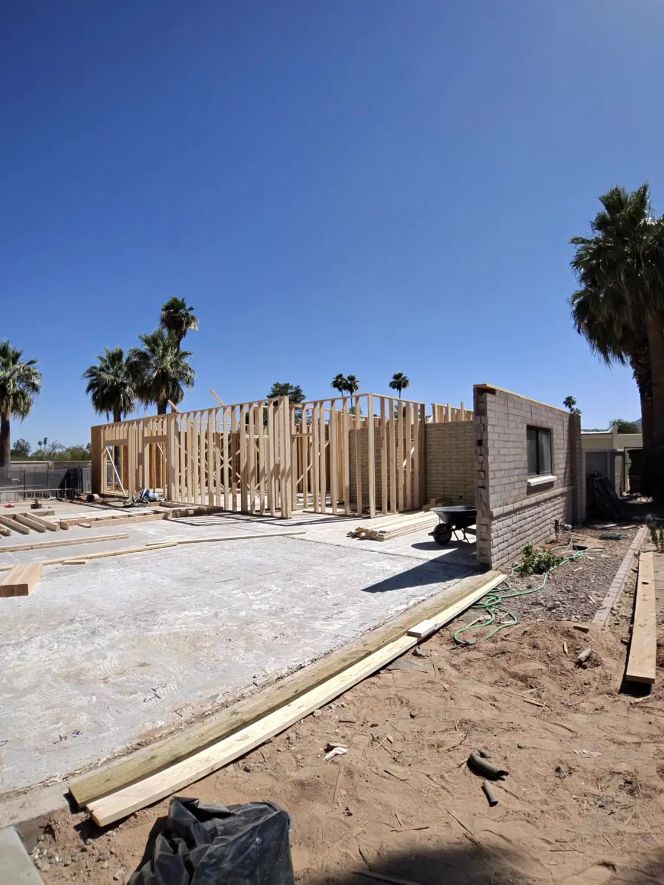
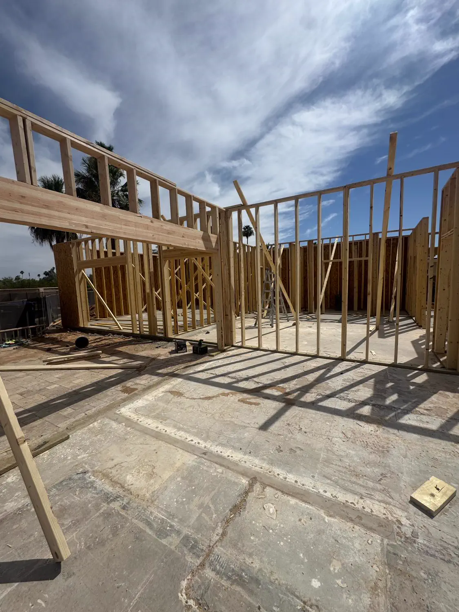
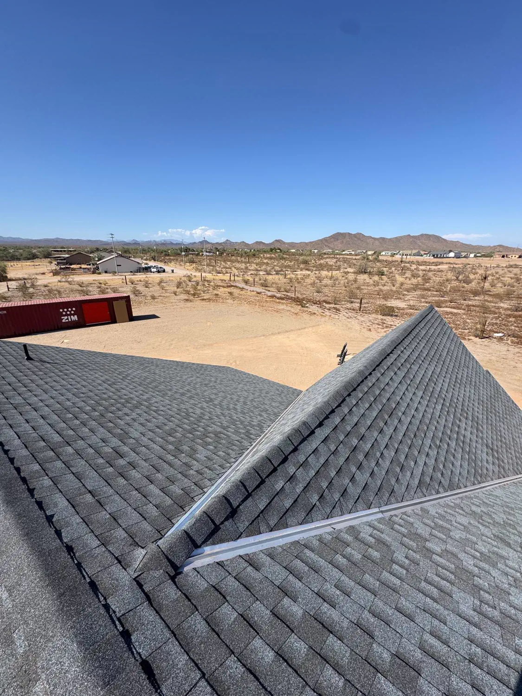
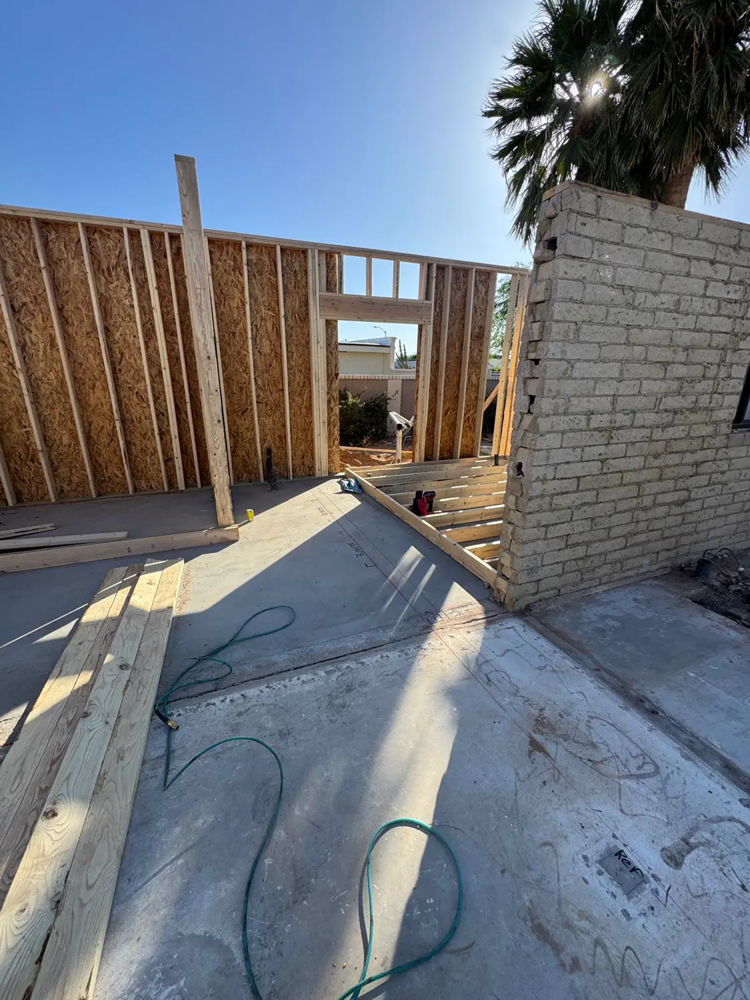

01
Residential Framing
Custom framing and structural work with careful coordination.
Construction projects built with craftsmanship, planning, and attention to detail.
— Selected work
Each one photographed on our own jobs, not staged and not stock.
Custom framing and structural work with careful coordination.

From concept to creation, our team shapes spaces that fit client goals.

Durable foundations, slabs, walkways, patios, and custom concrete projects.
— Shade structures
The thing we are asked for most that is not part of the house.
A pergola in Arizona is not garden furniture. It is the difference between a patio you use and one you look at through the glass for five months of the year, and on a west-facing lot the shade it throws changes what the room behind it costs to cool.
We build them three ways. An open-rafter pergola, for filtered light and the look of one. A solid-roof ramada or patio cover, where you want real shade and somewhere dry to sit out a storm. And a cover attached to the house, which is the hardest of the three, because the junction where it meets the existing roof is where it will leak if anyone rushes it.
All three start underground. Posts land on footings sized for the span and for uplift, on standoff bases that hold the timber clear of the concrete so it cannot wick water and rot from the bottom up. A monsoon gust loads a shade structure from beneath — a flat roof on posts is a wing — so the connections that matter most are the ones holding it down.
Decks and shade structures

— More from the same jobs






The stages of a build that do not get a card of their own.
Experience superior craftsmanship. Act now and elevate your living space. Contact Quest Construction.